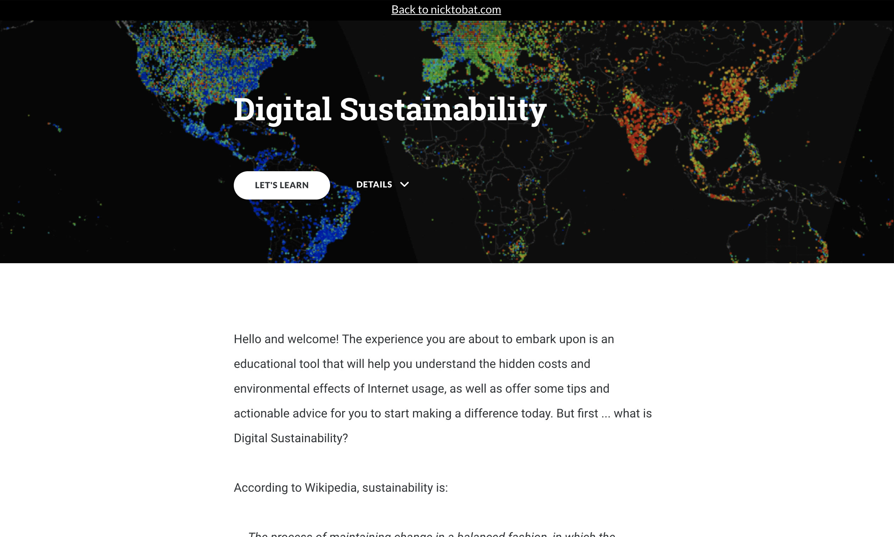
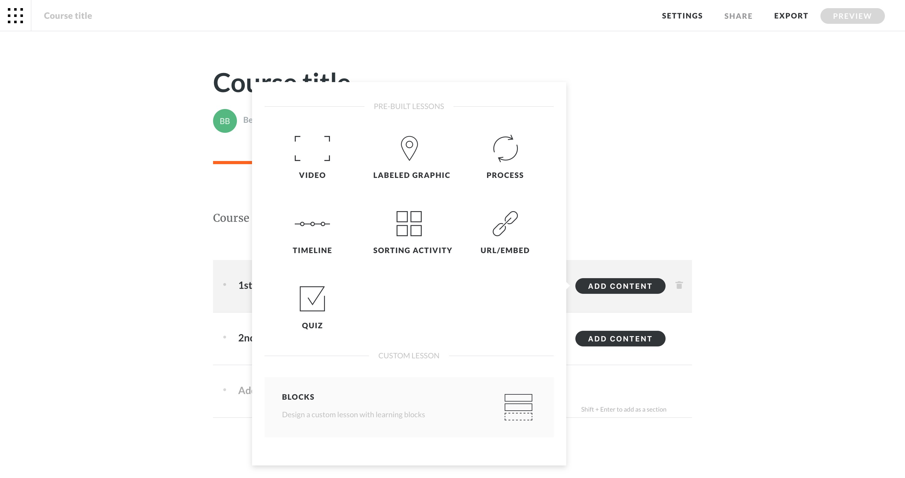
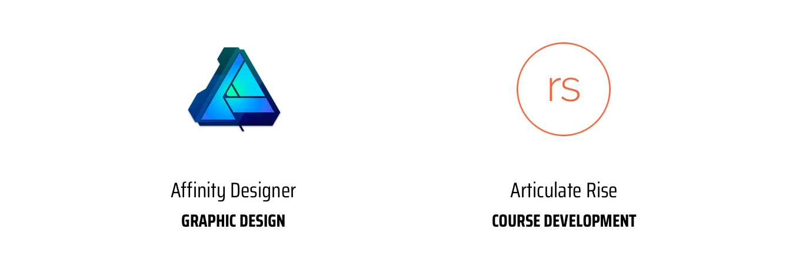

Digital Sustainability
Education and advice for responsible practices in our increasingly digital lives.
Education and advice for responsible practices in our increasingly digital lives.
This experience is the result of a semester-long thesis project on a topic of my choosing. I stumbled upon my topic quite by accident when I came across the following statistic in Greenpeace's 2014 Clicking Clean report that stopped me short:
If compared with the electricity demand of countries in the same year, the Internet would rank 6th in the world.
Even as a heavy Internet user, I was shocked. I had never seen Internet usage quantified in such a way, and as I started to tell people about it, they were all equally surprised. I knew I had discovered something important, and I decided to apply my skills as a designer to see what I could do about it.
The Digital Sustainability home screen on desktop
Digital Sustainability is a different beast than other forms of sustainability. The relationship between Internet usage and resource consumption has been abstracted in such a way that it is nearly invisible to us, and in fact, more Internet use is often correlated with eco-friendliness. We pay for speed, or quality, of service but the service itself is unlimited, which leads to irresponsible usage behaviors.
The Internet is run on servers. These servers "host" the web - they store all the files, and when you type in a URL in your browser, the server serves up the appropriate files for that specific site (of course, this is an incredibly simplified version of what actually happens when you press Enter). Or when you access some documents stored in the Cloud, the files have to be transmitted from the Cloud to your device. And these processes consume energy. Servers are housed in massive server farms which use electricity not only for running the servers 24/7, but keeping them cool. And the more we use the Internet, the more energy the servers use.
The experience that I developed is an eLearning course all about Digital Sustainability: users are introduced to the concept, quizzed on their Internet knowledge, and progress through a series of lessons on different aspects of the issue. A special section for designers & developers offers resources that help reduce bandwidth during the creative process.
As part of my thesis, I wrote an article introducing the concept. You can access it here.
Developing in Articulate Rise

CHOOSING THE RIGHT TOOL FOR THE JOB
CONSIDERATIONS
Based on conversations about the topic with my peers, I knew this was an unfamiliar subject area that would need to be thoroughly explained. Additionally, given the gravity of the Earth's current environmental crisis, I knew I wanted to provide visitors with actionable tips & advice for reducing their online impact.
OUTCOMES
I chose to develop an eLearning course in Articulate Rise, based on my past experience as an instructional designer. Rise is a responsive web-based authoring software with quizzing functionality and specialized content structuring. I created a custom theme, designed supporting graphics, and organized all of the information into a series of lessons with actionable tips in each section.
Tools used in this project
